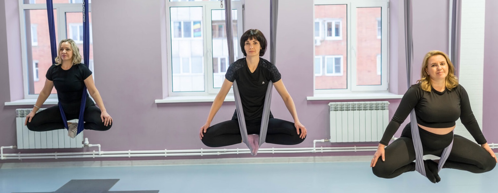

Расписание
Занятия проходят в фитнес-клубе «Салют»: пр-кт Победы, 144, 3 этаж, зал 1.
Расписание наших занятий:
Вторник 18.30-19.30
Четверг 19.00-21.30
Суббота 16.00-17.30
Наша практика по аэройоге будет состоять из следующих этапов:
- Небольшая настройка на практику через успокоение и дыхание.
- Разогрев тела с использованием гамака.
- Упражнения и статические позы в воздухе.
- Перевёрнутые асаны для вытяжения позвоночника и подготовке к шавасане.
- Глубокое расслабление — шавасана в гамаке.
Рекомендации к тренировкам
Чтобы тренировка проходила комфортно, безопасно для вас и других участников занятия, следует придерживаться таких правил:
- Перед тем как приступить к выполнению упражнений необходимо обязательно прослушать вводный инструктаж тренера.
- Заниматься следует в облегающей, но не сковывающей движения одежде.
- Украшения, заколки, часы и прочие аксессуары на тренировку надевать нельзя.
- Принимать пищу нужно за 1,5-2 часа до йоги.
- Разговаривать в процессе выполнения асан не рекомендуется.
- Не пользоваться сотовым телефоном во время практики.
Люди, которые занимаются йогой регулярно, сильно меняются. У них появляется любовь к себе, к своему телу, за которым нужно ухаживать, питать, укреплять, восстанавливать. Аэройога – это путь к здоровью и долголетию!